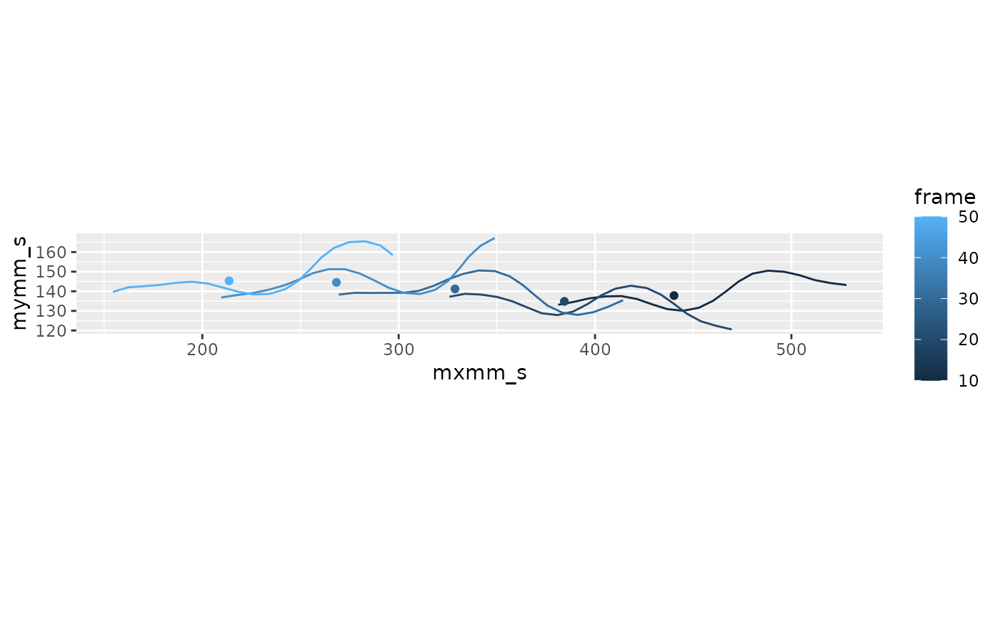
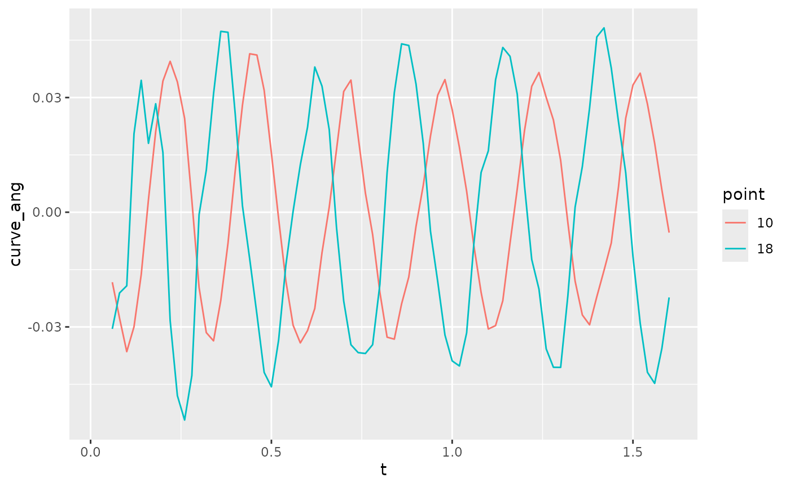
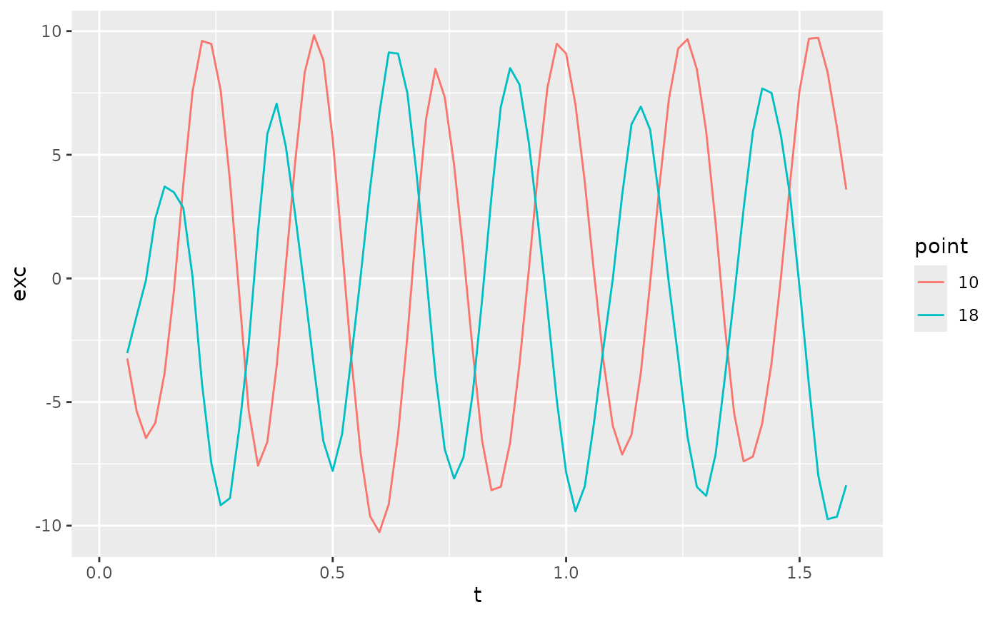
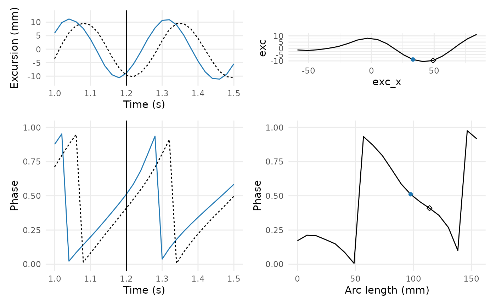
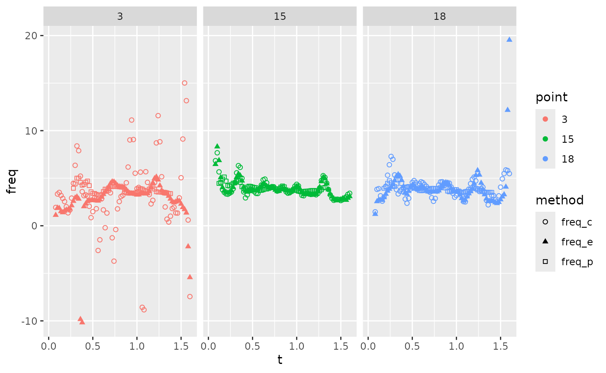

fishmechr
fishmechr.Rmd
library(fishmechr)
#> Warning: replacing previous import 'dplyr::filter' by 'gsignal::filter' when
#> loading 'fishmechr'
#> Warning: replacing previous import 'gsignal::conv' by 'pracma::conv' when
#> loading 'fishmechr'
#> Warning: replacing previous import 'gsignal::ifftshift' by 'pracma::ifftshift'
#> when loading 'fishmechr'
#> Warning: replacing previous import 'gsignal::findpeaks' by 'pracma::findpeaks'
#> when loading 'fishmechr'
#> Warning: replacing previous import 'gsignal::fftshift' by 'pracma::fftshift'
#> when loading 'fishmechr'
#> Warning: replacing previous import 'gsignal::ifft' by 'pracma::ifft' when
#> loading 'fishmechr'
#> Warning: replacing previous import 'gsignal::detrend' by 'pracma::detrend' when
#> loading 'fishmechr'
#>
#> Attaching package: 'fishmechr'
#> The following object is masked from 'package:stats':
#>
#> deriv
library(dplyr)
#>
#> Attaching package: 'dplyr'
#> The following objects are masked from 'package:stats':
#>
#> filter, lag
#> The following objects are masked from 'package:base':
#>
#> intersect, setdiff, setequal, union
library(tidyr)
library(ggplot2)
library(patchwork)Computing kinematic parameters
To compute midline swimming kinematics accurately, follow the steps below.
- Compute the arc length along the curve of the body.
- If the points are not consistently at the same arc length, interpolate the points so that each one is at a consistent point on the body. It is often useful to do some smoothing as part of this step.
- Compute a center location. Ideally this is the center of mass, but it could be approximated in a variety of ways.
- Compute the body curvature or excursion relative to a central axis, or both.
- Estimate the phase of the oscillation at each point. You can either detect peaks and zero crossings or use a mathematical technique called the Hilbert transform.
- Use temporal and spatial derivatives of the phase to estimate the oscillation frequency, body wavelength, and body wave speed.
- Based on the phase, identify individual undulation cycles. Within each cycle, you can identify the range of body excursion or curvature to compute the amplitude.
1. Compute arc length
Most kinematic variables are best specified in terms of arc length , the distance along the body from the head to a particular point : Using arc length is better than something like the coordinate for two reasons. First, often a fish does not swim precisely along the axis, which means that the points would need to be rotated. Second, many fish swim with relatively large amplitude motions, which means that the distance along the curve is larger than the distance along the swimming direction, particularly near the tail where amplitudes are higher.
2. Interpolate points for a consistent position
Ideally, we want each point to represent a consistent location on the fish’s body. Particularly with fish that do not have clear landmarks along the body, we may be able to mark the middle easily between the left and right side, but at points that may not be consistent along the fish’s length. We can use a spline to interpolate points at a consistent location.
Digitized points often have some error. As part of the interpolation process, we can use a smoothing spline to smooth out some of that error.
3. Estimate a center location
The center location is a weighted average location. For a midline defined by and coordinates , there are four main ways to identify the center location.
If is the mass of segment located between and , then where is the total mass of the fish. If you know the mass distribution but not the true masses of segments, you could also use as the fraction of the total mass in segment so that would be 1.
If you do not know the mass distribution, then you can approximate in several ways. The best is to use the width and height of the body. If the body, without the fins, has an elliptical cross section, where is the horizontal width and is the dorso-ventral height at point , then the volume of the segment from and is where , , and . Then we approximate , where is the density of the fish, which we assume here to be constant, so that
Often the width is visible from a camera from above or below, but the height is not known. In this case, a reasonable approximation (at least for elongate fishes where the height does not vary too much) is that , so that
Choose one point along the body to use as the center. This could be the snout or a point close to the center of mass. This has been called the “stretched-straight center of mass”, but tends to give inaccurate estimates of velocity or acceleration.
4. Estimate curvature or lateral excursion
Curvature
The 2D curvature of the midline in the horizontal plane is often a useful variable to compute. In particular, it is usually proportional to the muscle strain at that point on the body (Shadwick 1998, Katz 1999). In contrast, the lateral excursion of the body is not usually a good estimate of muscle strain (Shadwick 1998).
Mathematically, curvature can be thought of in two different ways. First, it is the inverse of the radius of curvature: the radius of a circle drawn through three successive points. The smaller the radius of curvature, the sharper the body bend, and the larger the value of . This estimate for curvature is defined by the following equation
Second, it is the spatial derivative of the angle of each segment. If a segment at arc length has an angle to the horizontal axis, then the curvature is The angle for segment is .
Although both formulas are mathematically equivalent, they have slightly different properties depending on the measurement error on the and positions.
Lateral excursion
One can also estimate the body phase, and then the wavelength and wave speed, based on the excursion of the body relative to a primary axis. We suggest using the singular value decomposition (SVD) to estimate the primary axis, then using a low-pass filter to remove any oscillations at the tail beat frequency or higher. If you have a matrix of and coordinates of points along the body at a specific time, where the subscript indicates the size of the matrix ( points along the body by 2).
First, center each axis by subtracting the location of the center of mass or the mean of each column, to produce a matrix , centered around 0. Then the singular value decomposition allows you to write the matrix in the form The matrix then represents the principal axes of the body in that frame. The matrix can be estimated at each time point, to produce a time-varying matrix .
Assuming the amplitude is relatively small, the first column of represents a unit vector pointing along the primary axis of the body (which we call and the second column is a unit vector normal to the primary axis.
We suggest using a low pass filter with a cutoff frequency below the tail beat frequency to smooth the components of the vector, making sure to normalize it after smoothing. See implementation details below.
5. Estimate phase
To estimate the undulation frequency, body wavelength, and wave speed, consider a simple equation for the midline. Fish swim using a traveling wave of curvature (or lateral excursion) defined at an arc length along the body as where is the wave amplitude, is the wave length, is the oscillation frequency, and is time. In this case, the phase of the oscillation at a particular point along the body is approximately equal to the argument of the cosine, . If the amplitude varies over quickly over time or space, this approximation may not be exactly correct.
If we can estimate the phase accurately, then we can use a spatial (i.e., with respect to ) or temporal derivative to estimate , the body wavelength, or the undulation frequency.
Below, we describe two methods for estimating phase. Before using either of these two methods, it may be helpful to add a second smoothing step, which may even oversmooth the data. Both of the methods require signals that oscillate around zero and clear peaks. If the oscillations are offset from zero, or there is noise in the data (particularly if there are noisy oscillations near the peaks that make it seem that there are multiple peaks), they will not give good results.
Smoothing
Here, we suggest using a bandpass filter on the oscillation of any
individual point. Choose a lower frequency that is less than half the
lowest oscillation frequency and an upper frequency that is about 5-10
times the highest oscillation frequency. The low frequency may be quite
low. Be careful using standard filter design functions (such as the
butter function in pracma) because these
functions use autoregressive moving averages, which do not perform well
for filtering at very low frequencies. We recommend using the “second
order sections” method, which is more numerically stable. See further
details below.
Note that these (over) smoothed results are good to use for estimating phase, but not for later estimates of tailbeat amplitude or excursion.
Use the Hilbert transform
One convenient and relatively robust way to estimate the phase of each body point involves the use of the Hilbert transform , a procedure that uses the Fourier transform to estimate a periodic signal that is 90deg shifted relative to another. In essence, given a cosine signal, the Hilbert transform returns the sine with the same amplitude and frequency. The utility of this operation is that it lets us estimate the ``analytic signal’’, a complex-valued signal where the magnitude of the complex number is the amplitude of the wave and the phase angle of the complex number is the phase of the signal.
We can then take the Hilbert transform to estimate the analytic
signal for curvature or lateral excursion
where
is the imaginary number. (Note that the hilbert function in
R and Python returns the full analytic signal, not just the imaginary
component as written above). For a complex number
,
the magnitude is denoted by
and the phase angle is denoted by
.
One can also estimate the analytic signal for the lateral excursion of the body , where is the lateral position of a point on the body, relative to the overall axis of the body. We suggest using the singular value decomposition to estimate the central body axis and then using a low-pass filter with a cutoff frequency lower than the tail beat frequency to remove the tail beat oscillation, as described above.
The analytic signal thus provides an estimate of the phase can be estimated as a continuous function of both time and position along the body. Other techniques for estimating phase require identifying particular features in the signal (such as peaks or zero crossings) and therefore do not estimate phase as a continuous signal. The estimated phase is thus For a traveling wave, this phase, as estimated here, is equal to the argument of the cosine function from the traveling wave equation above, .
Numerical considerations for the Hilbert transform
The Hilbert transform only works well for this analysis with signals that are centered around zero and consist of many relatively smooth tailbeats. This is why we suggest using the curvature , rather than something like lateral position or the coordinate of the body. To use the Hilbert transform on a lateral position, it is important to subtract a baseline value or use a high pass filter to ensure that the signal is centered around zero.
Similarly, if the signal is noisy, the phase will not increase steadily and the derivatives used to estimate and will not be meaningful. It is best to filter the input signal using a bandpass or low pass filter so that the oscillations are smooth.
In most programming languages, one should use a function
atan2 to estimate phase (not atan), because it
gives an angle that ranges around the full circle (rather than 0 to 180
degrees). However, the output of atan2 will jump (usually
from
to
)
as
or
increase. To estimate frequency or wavelength, before performing the
derivatives, one should estimate a smoothly increasing phase using a
function unwrap, which searches for jumps and removes
them.
Detect peaks and zero crossings
We can also estimate a phase by detecting specific features in the oscillation, such as peaks or zero crossings, and then interpolating a continuous value for the phase using a spline curve. For a cosine function, as above, a positive peak has phase , a downward zero crossing has phase , a negative peak (i.e., a trough) has phase , and an upward zero crossing has phase . By identifying these features and their corresponding phases, one can then interpolate a continuous phase.
Using this method requires careful error checking. In particular, peaks can be identified erroneously, particularly if there is noise in the signal. We recommend using a strong smoothing filter on the curvature or lateral excursion before estimating phase. See examples and numerical details below.
6. Use the phase to estimate frequency and wavelength
We can then use the estimated phase to compute the frequency and wavelength by taking derivatives in time or space, respectively, Estimated this way, frequency should be the same at every point along the body. Therefore, you can average across the body or choose a single point along the body (usually the tail) to use as the estimate of frequency.
The body wave speed is the product of the two:
7. Quantify swimming parameters on a cycle-by-cycle basis
Once you have estimated a good undulation phase, it is straightforward to quantify other parameters that vary every cycle. Usually, we need to define an overall phase of the entire body oscillation. It’s best to choose the most reliable phase estimate, which is usually the phase of the tail tip or a point near the tail (e.g., , where is the body length).
As phase increases past
,
it will jump back to 0. Most programming languages have a functioned
called unwrap that looks for those jumps and removes them,
producing a steadily increasing phase, which we will refer to as
.
Then the cycle number is
where the L brackets denote the floor operation, or
rounding down to the next lowest integer value.
For example, to find the body amplitude, search within each cycle to find the range of motion for each body point, and divide by two. See details below.
Example analysis of a lamprey data set
Data structure
The data set lampreydata is included in the
fishmechr package. Most swimming kinematics data sets
should have a similar structure:
- A time or frame column. It’s often good to keep both in the data
set. (Here, these are in
tandframe) - A column that identifies the point on the body. This could be a
factor variable, with names of each body part (like returned by Sleap or
DeepLabCut), as long as there is a clear order from head to tail. Or it
could be a numeric variable, with points numbered from 1 to
,
where 1 is the snout and
is the tail. (here this is in
point). - x and y coordinates of the point. Currently, these algorithms are
only designed to work on 2D movements in the horizontal plane. (here
these are in
mxmmandmymm, indicating “midline” x and y points in mm)
head(lampreydata)
#> t frame point mxmm mymm
#> 1 0.02 1 1 NA NA
#> 2 0.02 1 2 NA NA
#> 3 0.02 1 3 NA NA
#> 4 0.02 1 4 NA NA
#> 5 0.02 1 5 NA NA
#> 6 0.02 1 6 NA NAThis plot shows the midlines in two frames.
Kinematics process
Compute arc length
Here we plot the arc length of a few points along the body. We can see that they’re generally in the same location, but not exactly, so we’ll need to interpolate so that they’re in the same place.
lampreydata |>
ungroup() |>
filter(point %in% c(5, 10, 18)) |>
ggplot(aes(x = t, y = arclen0, color = point)) +
geom_point()
#> Warning: Removed 6 rows containing missing values or values outside the scale range
#> (`geom_point()`).Here’s the interpolation.
lampreydata <- lampreydata |>
interpolate_points_df(arclen0, mxmm, mymm, spar = 0.2,
tailmethod = 'extrapolate',
.out = c(arclen='arclen', xs='mxmm_s', ys='mymm_s'))Now the points are always at the same arc length. Sometimes this requires extrapolating to get the tail position.
lampreydata |>
filter(frame %in% c(10, 20)) |>
mutate(frame = factor(frame)) |>
ggplot(aes(x = mxmm, mymm, color = frame, group = frame)) +
geom_point(shape = 10) +
geom_path() +
geom_point(aes(x = mxmm_s, y = mymm_s), shape = 5) +
coord_fixed()Get the width
I have digitized the width of an ammocoete from the ventral view. We assume here that the width is the distance from one lateral edge to the other (like a diameter), not the distance from the center to an edge (like a radius). Here it’s expressed in terms of body lengths, both along the body and for the width itself.
Initially, the width is in a separate data frame. It should have a
column for arclength (here, s) and a column for width. This
one has columns for eels and ammocoetes. It’s simplest if s
and width are both normalized relative to body length (so s
should range from 0 to 1, and width should be around 0.05-0.1 BL for
most fishes).
fishwidth
#> # A tibble: 20 × 3
#> s eelwidth ammowidth
#> <dbl> <dbl> <dbl>
#> 1 0 0.0181 0.0160
#> 2 0.0526 0.0394 0.0169
#> 3 0.105 0.0501 0.0178
#> 4 0.158 0.0356 0.0182
#> 5 0.211 0.0380 0.0183
#> 6 0.263 0.0397 0.0185
#> 7 0.316 0.0403 0.0186
#> 8 0.368 0.0397 0.0181
#> 9 0.421 0.0398 0.0175
#> 10 0.474 0.0386 0.0169
#> 11 0.526 0.0367 0.0159
#> 12 0.579 0.0358 0.0149
#> 13 0.632 0.0339 0.0138
#> 14 0.684 0.0322 0.0127
#> 15 0.737 0.0295 0.0112
#> 16 0.789 0.0264 0.00977
#> 17 0.842 0.0246 0.00823
#> 18 0.895 0.0217 0.00597
#> 19 0.947 0.0139 0.00371
#> 20 1 0 0.0000875
fishwidth |>
ggplot(aes(x = s, y = ammowidth)) +
geom_path() +
labs(x = 'Arc length (BL)', y = 'Width (BL)')Here, we interpolated the width from the separate data frame so that
it’s defined at the right arc lengths for our lamprey data set.
interpolate_width assumes that arclen is in
real units (like cm) and goes from the head to the tip of the tail, so
that the last value represents the total length of the fish. Once the
width is interpolated at the new arc lengths, it also multiplies the
width by the total fish length.
lampreydata <-
lampreydata |>
group_by(frame) |>
mutate(width = interpolate_width(fishwidth$s, fishwidth$ammowidth, arclen))We just added another column to lampreydata containing
the width at each arclength along the body, defined in mm because the
arc length is in mm.
lampreydata |>
dplyr::filter(frame == 10)
#> # A tibble: 20 × 10
#> # Groups: frame [1]
#> t frame point mxmm mymm arclen0 arclen mxmm_s mymm_s width
#> <dbl> <int> <int> <dbl> <dbl> <dbl> <dbl> <dbl> <dbl> <dbl>
#> 1 0.2 10 1 381. 133. 0 0 381. 133. 2.48
#> 2 0.2 10 2 389. 134. 7.78 8.13 389. 135. 2.61
#> 3 0.2 10 3 396. 136. 15.6 16.3 397. 136. 2.75
#> 4 0.2 10 4 404. 137. 23.4 24.4 405. 137. 2.81
#> 5 0.2 10 5 412. 138. 31.1 32.5 413. 138. 2.83
#> 6 0.2 10 6 420. 137. 38.9 40.7 421. 136. 2.85
#> 7 0.2 10 7 427. 134. 46.7 48.8 429. 133. 2.88
#> 8 0.2 10 8 434. 132. 54.5 56.9 437. 131. 2.80
#> 9 0.2 10 9 442. 130. 62.3 65.1 445. 130. 2.70
#> 10 0.2 10 10 450. 131. 70.1 73.2 453. 132. 2.61
#> 11 0.2 10 11 457. 133. 77.8 81.3 460. 135. 2.46
#> 12 0.2 10 12 464. 138. 85.6 89.5 467. 140. 2.30
#> 13 0.2 10 13 470. 142. 93.4 97.6 473. 145. 2.14
#> 14 0.2 10 14 476. 147. 101. 106. 480. 149. 1.96
#> 15 0.2 10 15 483. 150. 109. 114. 488. 151. 1.74
#> 16 0.2 10 16 491. 150. 117. 122. 496. 150. 1.51
#> 17 0.2 10 17 499. 150. 125. 130. 504. 148. 1.27
#> 18 0.2 10 18 506. 148. 132. 138. 512. 146. 0.923
#> 19 0.2 10 19 514. 145. 140. 146. 520. 144. 0.574
#> 20 0.2 10 20 521. 144. 148. 155. 528. 143. 0.0135Compute the center of mass
lampreydata <-
lampreydata |>
get_midline_center_df(arclen, mxmm_s,mymm_s, width=width)
#> Estimating center of mass based on width
lampreydata |>
filter(frame %in% c(10, 20, 30, 40, 50)) |>
ggplot(aes(x = mxmm_s, y = mymm_s, color = frame)) +
geom_path(aes(group = frame)) +
geom_point(data = ~filter(.x, point == 1), aes(x = xcom, y = ycom)) +
coord_fixed()
Compute curvature
This computes the curvature by the two different methods.
lampreydata <-
lampreydata |>
group_by(frame) |>
mutate(curve_ang = curvature(arclen0, mxmm_s, mymm_s),
curve_xy = curvature(arclen0, mxmm_s, mymm_s, method="xy"))Compare the results. Here they aren’t very different, although the “xy” method gives very slightly higher peaks.
lampreydata |>
filter(frame %in% c(10, 20)) |>
mutate(frame = factor(frame)) |>
ggplot(aes(x = arclen0, color = frame, group = frame)) +
geom_path(aes(y = curve_ang), linetype='solid') +
geom_path(aes(y = curve_xy), linetype='dashed')
#> Warning: Removed 4 rows containing missing values or values outside the scale range
#> (`geom_path()`).
#> Removed 4 rows containing missing values or values outside the scale range
#> (`geom_path()`).Plot curvature as a function of time for two different points along the body. For the Hilbert analysis to work well, these should be close to sinusoidal and centered around 0.
lampreydata |>
filter(point %in% c(10, 18)) |>
mutate(point = factor(point)) |>
ggplot(aes(x = t, y = curve_ang, color = point)) +
geom_path()
#> Warning: Removed 4 rows containing missing values or values outside the scale range
#> (`geom_path()`).
Get excursion
This extracts the central swimming axis.
lampreydata <- lampreydata |>
ungroup() |>
mutate(mxmm_ctr = mxmm_s - xcom,
mymm_ctr = mymm_s - ycom) |>
get_primary_swimming_axis_df(t, mxmm_ctr, mymm_ctr, .frame=frame)
lampreydata |>
filter(frame %in% c(10, 20, 30)) |>
ggplot(aes(x = mxmm, y = mymm, color = frame)) +
geom_path(aes(group = frame)) +
geom_segment(data = ~ filter(.x, point == 20),
aes(x = xcom, y = ycom,
xend = xcom - 50*swimaxis_x,
yend = ycom - 50*swimaxis_y)) +
geom_point(data = ~ filter(.x, point == 20),
aes(x = xcom, y = ycom), color = 'red') +
facet_grid(frame ~ .) +
coord_fixed()Similar to curvature, we can compute phases based on the lateral
excursions (b). As above, they need to be mostly sinusoidal
and centered around zero.
lampreydata |>
filter(point %in% c(10, 18)) |>
mutate(point = factor(point)) |>
ggplot(aes(x = t, y = exc, color = point)) +
geom_path()
#> Warning: Removed 4 rows containing missing values or values outside the scale range
#> (`geom_path()`).
Phase
Smooth the data again
To ensure that we have smooth enough data for the phase estimation, we smooth the oscillations here again.
Get the sample frequency.
sampfreq <-
lampreydata |>
filter(frame %in% c(1, 2)) |>
group_by(frame) |>
summarize(t = first(t)) |>
ungroup() |>
summarize(sampfreq = 1 / (t[2] - t[1])) |>
pull(sampfreq)
sampfreq
#> [1] 50Build the filter. build_filter here is just a small
wrapper function for gsignal::butter, which builds a
Butterwoth filter and returns it in SoS format.
filt <- build_filter(0.5, 15, sampfreq = sampfreq)Apply the filter for each point over time. Make sure that you are
smoothing each point individually (i.e., use
group_by(point)) and that the data are sorted in time.
lampreydata <-
lampreydata |>
arrange(point, t) |>
group_by(point) |>
mutate(exc_s = apply_filter(filt, exc),
curve_ang_s = apply_filter(filt, curve_ang))
lampreydata |>
filter(point %in% c(10, 18)) |>
mutate(point = factor(point)) |>
ggplot(aes(x = t, color = point)) +
geom_path(aes(y = exc)) +
geom_path(aes(y = exc_s), linetype = 'dashed')
#> Warning: Removed 4 rows containing missing values or values outside the scale range
#> (`geom_path()`).
#> Removed 4 rows containing missing values or values outside the scale range
#> (`geom_path()`).Now we compute the phase of each body point as it oscillates over
time, looking at either the curvature curve_ang or the
excursion b.
lampreydata <-
lampreydata |>
arrange(frame, desc(point)) |>
group_by(point) |>
mutate(ph_c = hilbert_phase(curve_ang_s),
ph_e = hilbert_phase(exc_s),
ph_p = peak_phase(exc_s))
#> Warning: There were 42 warnings in `mutate()`.
#> The first warning was:
#> ℹ In argument: `ph_c = hilbert_phase(curve_ang_s)`.
#> ℹ In group 2: `point = 2`.
#> Caused by warning in `hilbert_phase()`:
#> ! For a good phase estimate, the signal should oscillate around 0
#> ℹ Run `dplyr::last_dplyr_warnings()` to see the 41 remaining warnings.hilbert_phase does a few checks on the results and gives
warnings if it finds things that might cause problems. * It checks to
make sure that most of the input data is not NA. It does not give a
warning if all of the input data is NA, only if at least some of the
data is not NA. * It checks that the input signal seems to oscillate
around 0. * It looks whether the phase mostly advances over time. If we
have cases when the phase seems to run backwards, that’s often a good
indication that the data isn’t smoothed enough. In the case above, the
warning is for point 2, which is close to the head, where curvature
tends to be quite low, so we can ignore the warning.
Compare the two phase estimates. We expect the slopes to be the same, but there could be an offset of in places. Here solid lines are phase based on curvature and dashed are phase based on excursion.
lampreydata |>
ungroup() |>
filter(point %in% c(3, 8, 15, 18)) |>
mutate(point = factor(point)) |>
pivot_longer(cols = c(ph_c, ph_e, ph_p), names_to = "method", values_to = "phase") |>
ggplot(aes(x = t, y = phase, color = point, linetype = method)) +
geom_path() +
facet_wrap(~point)
#> Warning: Removed 93 rows containing missing values or values outside the scale range
#> (`geom_path()`).Note that the curvature based phase (solid line) tends to fluctuate a lot for point 3, which is near the head where curvature is small.
Example phase figure
examplet <- 1.2
colors <- c("#1f78b4", "black")
p1 <- lampreydata |>
ungroup() |>
filter(point %in% c(13, 15)) |>
mutate(point = factor(point)) |>
ggplot(aes(x = t, y = exc, color = point, linetype = point)) +
geom_path(aes(group = point)) +
geom_vline(xintercept = examplet) +
scale_color_manual(values = colors) +
theme_minimal() +
xlim(c(1,1.5)) +
labs(x = "Time (s)", y = "Excursion (mm)") +
theme(legend.position="none",
panel.grid.minor.x = element_blank(),
panel.grid.minor.y = element_blank())
p2 <- lampreydata |>
ungroup() |>
filter(point %in% c(13, 15)) |>
mutate(point = factor(point),
ph_e = (ph_e %% (2*pi)) / (2*pi)) |>
ggplot(aes(x = t, y = ph_e, color = point, linetype = point)) +
geom_path(aes(group = point)) +
geom_vline(xintercept = examplet) +
scale_color_manual(values = colors) +
xlim(c(1,1.5)) +
ylim(0,1) +
theme_minimal() +
labs(x = "Time (s)", y = "Phase") +
theme(legend.position="none",
panel.grid.minor.x = element_blank(),
panel.grid.minor.y = element_blank())
p3 <- lampreydata |>
ungroup() |>
mutate(point = factor(point)) |>
filter(near(t, examplet, tol = 0.001)) |>
ggplot(aes(y = exc, x = exc_x)) +
geom_path() +
geom_point(data = ~ filter(.x, point %in% c(13, 15)),
aes(color = point, shape = point)) +
scale_color_manual(values = colors) +
scale_shape_manual(values = c(19, 5)) +
coord_fixed() +
theme_minimal() +
theme(legend.position="none")
p4 <- lampreydata |>
ungroup() |>
mutate(point = factor(point)) |>
filter(near(t, examplet, tol = 0.001)) |>
mutate(ph_eu = (gsignal::unwrap(ph_e) / (2*pi)) %% 1) |>
ggplot(aes(y = ph_eu, x = arclen)) +
geom_path() + #color = "#1b9e77") +
geom_point(data = ~ filter(.x, point %in% c(13, 15)),
aes(color = point, shape = point)) +
scale_color_manual(values = colors) +
scale_shape_manual(values = c(19, 5)) +
ylim(0,1) +
theme_minimal() +
labs(x = "Arc length (mm)", y = "Phase") +
theme(legend.position="none",
panel.grid.minor.x = element_blank(),
panel.grid.minor.y = element_blank())
# scale_y_continuous(transform = "reverse")
p1 + p3 + p2 + p4 +
plot_layout(nrow = 2, heights = c(1,2))
#> Warning: Removed 108 rows containing missing values or values outside the scale range
#> (`geom_path()`).
#> Removed 108 rows containing missing values or values outside the scale range
#> (`geom_path()`).
Frequency
As described above, the time derivative of the phase is the frequency. Here, we can compute a frequency at each point along the body, although they ought to be the same.
lampreydata |>
group_by(point) |>
mutate(freq_c = get_frequency(t, ph_c, method='deriv'),
freq_e = get_frequency(t, ph_e, method='deriv'),
freq_p = get_frequency(t, ph_p, method='deriv')) |>
pivot_longer(cols = c(freq_c, freq_e, freq_p), names_to = "method", values_to = "freq") |>
filter(point %in% c(3, 15, 18)) |>
mutate(point = factor(point)) |>
ggplot(aes(x = t, y = freq, color = point, shape = method)) +
scale_shape_manual(values = c(1, 17, 22)) +
geom_point() +
facet_wrap(~point)
#> Warning: There were 4 warnings in `mutate()`.
#> The first warning was:
#> ℹ In argument: `freq_c = get_frequency(t, ph_c, method = "deriv")`.
#> ℹ In group 2: `point = 2`.
#> Caused by warning in `get_frequency()`:
#> ! Phase seems to go backwards a lot, which may indicate an overly noisy signal
#> ℹ Run `dplyr::last_dplyr_warnings()` to see the 3 remaining warnings.
#> Warning: Removed 79 rows containing missing values or values outside the scale range
#> (`geom_point()`). # Body wavelength
Body wavelength, as described above, is the derivative of the phase of each point along the body with respect to arc length. Phase typically decreases along the body, which indicates a backward traveling wave.
lampreydata |>
filter(frame %in% c(60, 80)) |>
group_by(frame) |>
mutate(phbody = ph_p) |>
ggplot(aes(x = arclen, y = phbody, color = frame)) +
geom_path(aes(group = frame))
#> Warning: Removed 20 rows containing missing values or values outside the scale range
#> (`geom_path()`).
The apparent discontinuity at
= 50mm is not real. It just reflects the fact that phase goes from
to
and then wraps around back to 0. We get rid of that by using the
unwrap function, applied across the spatial dimension
(equivalently, using group_by with time or frame
number).
This is the phase across the body with the discontinuities removed.
Methods of estimating wavelength
There are several ways to estimate body wavelength based on the body
phase, which have different advantages and disadvantages. The function
get_wavelength can run each of them.
At each point along the body, you can estimate the derivative of the phase with respect to arc length. This gives the most comprehensive results, and, in particular, makes it fairly simple to consider whether wavelength varies along the body, but is also very sensitive to noise.
You can fit a line to all of the data along the body and take the slope of that line. This method is the least sensitive to noise, but only gives a single value along the entire body.
You can look for the distance along the body in which the phase changes by a full or a half cycle. If you look for the phase at the tail and then step backward along the body until you find a point that’s either a full or half cycle before the tail, then that distance represents a full or half wave, respectively.
get_wavelengthmakes this process more accurate by using a simple linear interpolation to find the distance that represents exactly 1 or 0.5 waves.
The phase tends to be poorly estimated for body points that are more
anterior. get_wavelength allows you to specify a formula to
ignore certain locations for the estimate.
Here is an example for a single frame. We’re ignoring points that are less than 30mm from the head.
w <-
lampreydata |>
arrange(frame, arclen) |>
filter(frame %in% c(40)) |>
group_by(frame) |>
mutate(ph2 = gsignal::unwrap(ph_e),
wavelen_deriv = get_wavelength(arclen, ph2, method="deriv",
ignore_arclen_vals = \(s) s < 30),
wavelen_slope = get_wavelength(arclen, ph2, method="slope",
ignore_arclen_vals = \(s) s < 30),
wavelen_cycle = get_wavelength(arclen, ph2, method="cycle",
ignore_arclen_vals = \(s) s < 30,
sort_arclen = FALSE),
wavelen_halfcycle = get_wavelength(arclen, ph2, method="halfcycle",
ignore_arclen_vals = \(s) s < 30,
sort_arclen = TRUE))
w |>
pivot_longer(cols = contains("wavelen"), names_to = "method", values_to = "wavelen") |>
ggplot(aes(x = arclen, y = wavelen, color = method, shape = method)) +
geom_point()
#> Warning: Removed 41 rows containing missing values or values outside the scale range
#> (`geom_point()`).Here, you can see that all of the methods give similar results, but there are different numbers of values and different resolution along the body. We suggest the “halfcycle” option as a good, relatively robust compromise.
lampreydata |>
arrange(frame, arclen) |>
group_by(frame) |>
mutate(phbody_e = gsignal::unwrap(ph_e),
phbody_c = gsignal::unwrap(ph_c),
wavelen_exc = get_wavelength(arclen, phbody_e, method="halfcycle",
ignore_arclen_vals = \(s) s < 30),
wavelen_curve = get_wavelength(arclen, phbody_c, method="halfcycle",
ignore_arclen_vals = \(s) s < 30)) |>
pivot_longer(cols = contains("wavelen"), names_to = "method", values_to = "wavelen") |>
ggplot(aes(x = t)) +
geom_point(aes(y = wavelen, color = arclen, shape=method)) +
scale_shape_manual(values = c(15, 4))
#> Warning: There were 6 warnings in `mutate()`.
#> The first warning was:
#> ℹ In argument: `wavelen_exc = get_wavelength(...)`.
#> ℹ In group 3: `frame = 3`.
#> Caused by warning in `get_wavelength()`:
#> ! Phase does not seem to be decreasing along the body. Wavelength may be strange
#> ℹ Run `dplyr::last_dplyr_warnings()` to see the 5 remaining warnings.
#> Warning: Removed 2838 rows containing missing values or values outside the scale range
#> (`geom_point()`).Here we see that wavelength estimated based on curvature is slightly noisier than curvature based on excursion, and that both fluctuate over time.
lampreydata |>
arrange(frame, arclen) |>
group_by(frame) |>
mutate(phbody_e = gsignal::unwrap(ph_e),
phbody_c = gsignal::unwrap(ph_c),
wavelen_exc = get_wavelength(arclen, phbody_e, method="halfcycle",
ignore_arclen_vals = \(s) s < 30),
wavelen_curve = get_wavelength(arclen, phbody_c, method="halfcycle",
ignore_arclen_vals = \(s) s < 30)) |>
pivot_longer(cols = contains("wavelen"), names_to = "method", values_to = "wavelen") |>
ggplot(aes(x = arclen)) +
geom_point(aes(y = wavelen, color = arclen, shape=method)) +
scale_shape_manual(values = c(15, 4)) +
facet_wrap(~method)
#> Warning: There were 6 warnings in `mutate()`.
#> The first warning was:
#> ℹ In argument: `wavelen_exc = get_wavelength(...)`.
#> ℹ In group 3: `frame = 3`.
#> Caused by warning in `get_wavelength()`:
#> ! Phase does not seem to be decreasing along the body. Wavelength may be strange
#> ℹ Run `dplyr::last_dplyr_warnings()` to see the 5 remaining warnings.
#> Warning: Removed 2838 rows containing missing values or values outside the scale range
#> (`geom_point()`).This plot shows wavelength as a function of body position and estimation method. The curvature-based wavelengths seem to increase along the body (aside from some erroneous very low values very close to the tail), while the excursion-based wavelengths tend to decrease moving toward the tail.
Amplitude
To estimate amplitude, it’s helpful to set up an overall cycle number
for the whole body. We define this based on the excursion of the tail
point. get_body_cycle_numbers also excludes partial
cycles.
lampreydata <-
lampreydata |>
get_body_cycle_numbers_df(ph_p, 20) |>
arrange(t, point)
lampreydata
#> # A tibble: 1,600 × 26
#> # Groups: point [20]
#> t frame point mxmm mymm arclen0 arclen mxmm_s mymm_s width xcom ycom
#> <dbl> <int> <int> <dbl> <dbl> <dbl> <dbl> <dbl> <dbl> <dbl> <dbl> <dbl>
#> 1 0.02 1 1 NA NA NA 0 NA NA 2.48 NA NA
#> 2 0.02 1 2 NA NA NA 8.13 NA NA 2.61 NA NA
#> 3 0.02 1 3 NA NA NA 16.3 NA NA 2.75 NA NA
#> 4 0.02 1 4 NA NA NA 24.4 NA NA 2.81 NA NA
#> 5 0.02 1 5 NA NA NA 32.5 NA NA 2.83 NA NA
#> 6 0.02 1 6 NA NA NA 40.7 NA NA 2.85 NA NA
#> 7 0.02 1 7 NA NA NA 48.8 NA NA 2.88 NA NA
#> 8 0.02 1 8 NA NA NA 56.9 NA NA 2.80 NA NA
#> 9 0.02 1 9 NA NA NA 65.1 NA NA 2.70 NA NA
#> 10 0.02 1 10 NA NA NA 73.2 NA NA 2.61 NA NA
#> # ℹ 1,590 more rows
#> # ℹ 14 more variables: curve_ang <dbl>, curve_xy <dbl>, mxmm_ctr <dbl>,
#> # mymm_ctr <dbl>, swimaxis_x <dbl>, swimaxis_y <dbl>, exc_x <dbl>, exc <dbl>,
#> # exc_s <dbl>, curve_ang_s <dbl>, ph_c <dbl>, ph_e <dbl>, ph_p <dbl>,
#> # cycle <dbl>Now, we can use group_by on cycles to find
cycle-by-cycle values. Here, we look for the range of the excursion
variable b. Half of that range is the amplitude, which we
can define at each point on the body, and over the four cycles that are
present in this trial.
lampreydata |>
group_by(point, cycle) |>
summarize(amp = (max(exc) - min(exc)) / 2,
arclen = mean(arclen)) |>
ggplot(aes(x = arclen, y = amp, color = cycle)) +
geom_path(aes(group = cycle))
#> `summarise()` has grouped output by 'point'. You can override using the
#> `.groups` argument.
#> Warning: Removed 20 rows containing missing values or values outside the scale range
#> (`geom_path()`).